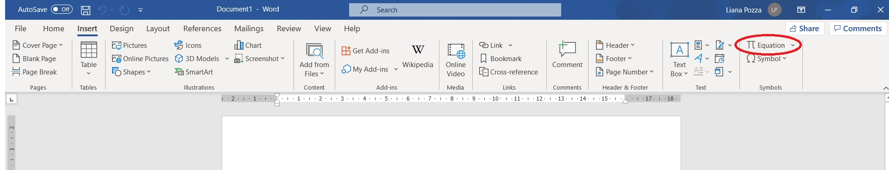
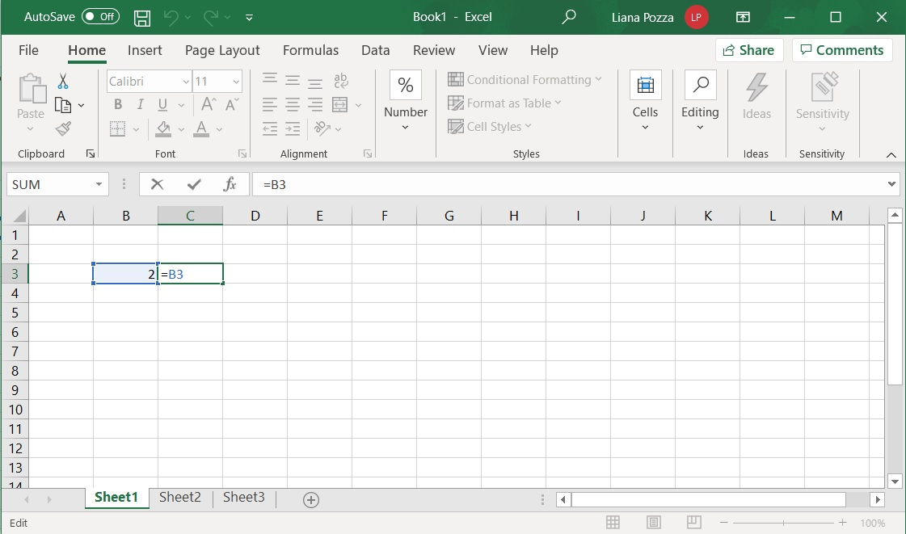
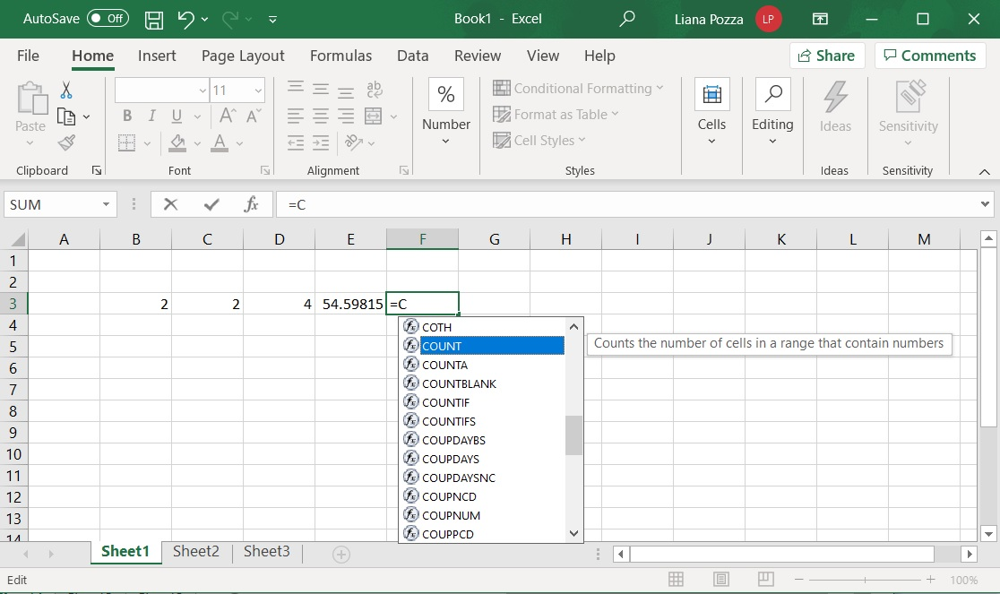
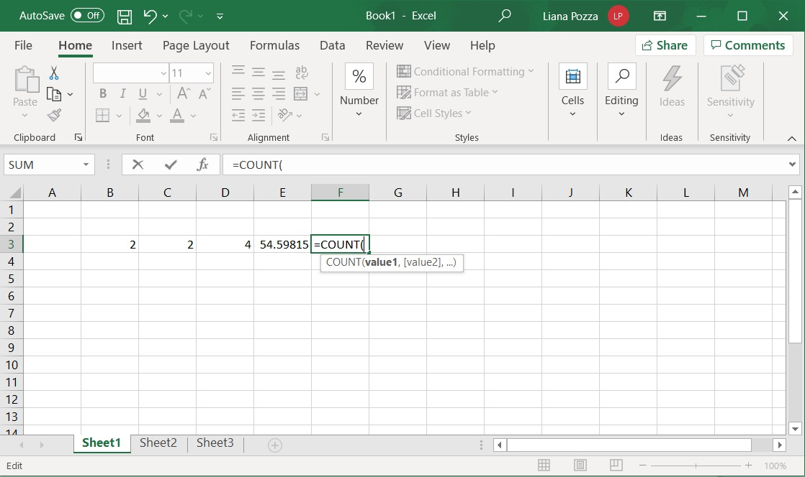
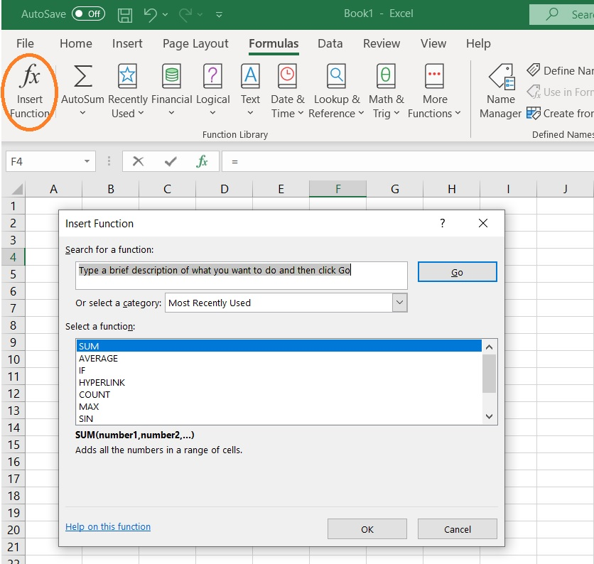
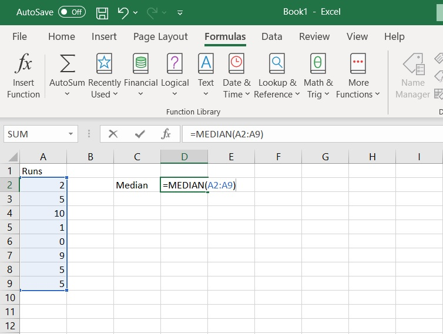
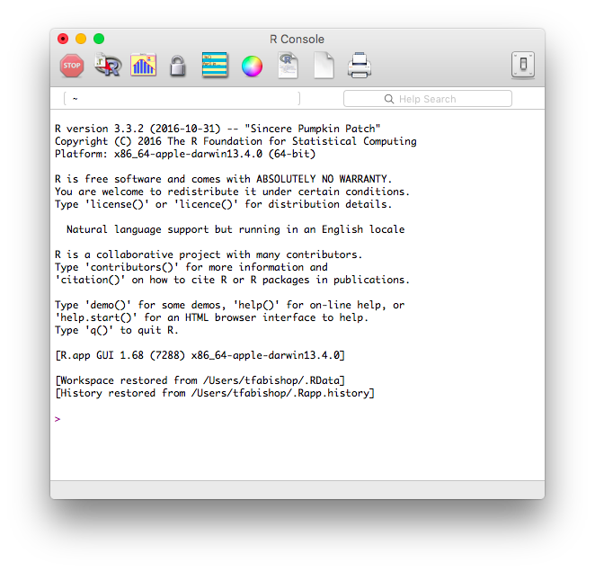
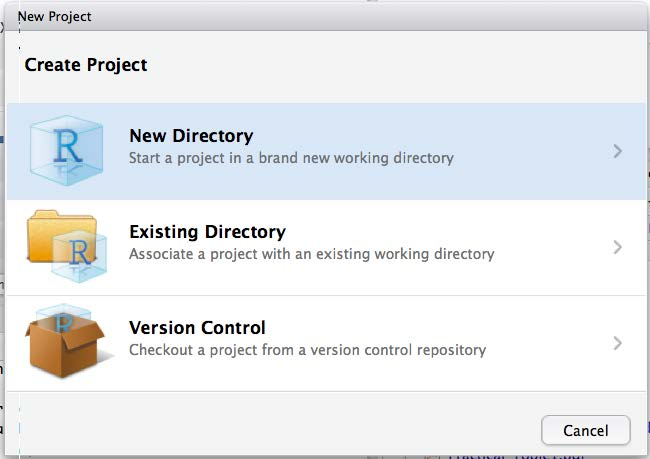
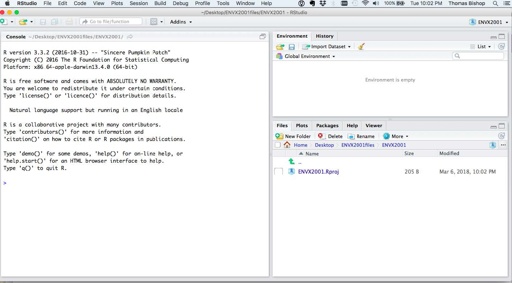
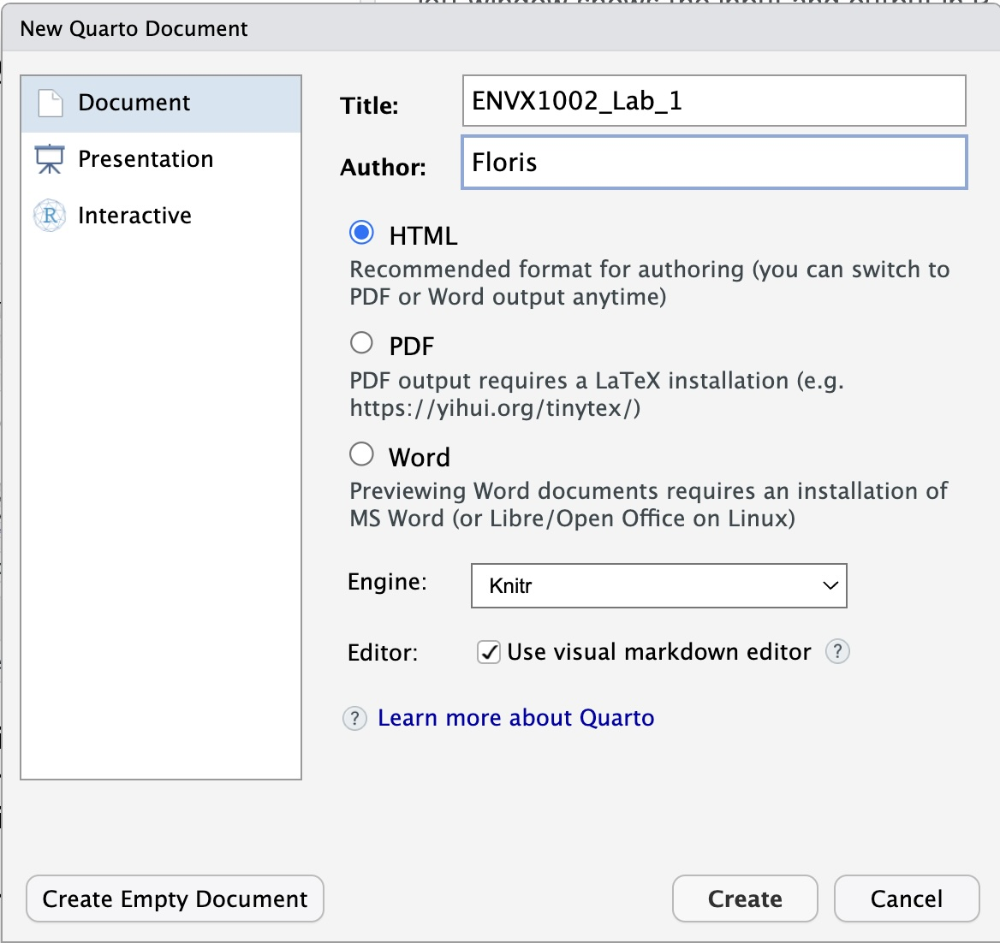

5+5[1] 10Learning Outcomes
At the end of this practical students should be able to:
Make sure you have access to:
Microsoft Word and Excel
R and RStudio
The data set and code file for this computer lab:
At the beginning of the next few weeks we will be doing some short activities before getting into the stats to help you foster a sense of belonging, learn more about your peers, and help better prepare you for your studies. This week we will start with a simple introduction, but before we do this, we would like to acknowledge those who were here before us:
To learn more about why we do Acknowledgement of Country, and the difference to Welcome to Country, see the following page: Welcome and Acknowledgement.
We are all from diverse backgrounds and have followed different paths to get to where we are today. To help you get to know your peers, your demonstrator will lead a class discussion, posting a number of questions on AnswerGarden, where you can then anonymously post your answer to the questions. Links will be provided once your demonstrator has set up the question.
After about 20 minutes of discussion, we can get started on the Stats! Welcome to ENVX1002!
Make sure you have access to Microsoft Word and Microsoft Excel. You can get free access to these programs through the University of Sydney here https://www.sydney.edu.au/students/student-it/apps.html. You can also use the desktops in the computer labs.
Equations are a fundamental part of statistics and data science. They help us to communicate complex ideas in a simple and concise manner.
Specialised software is needed to write out equations when writing documents and reports. One option is Microsoft Equation Editor which comes as part of Microsoft Word. You may use this functionality to write equations in this or other units to write out equations.
To Start off, open a word document, select the Insert tab and click your cursor on the Equation icon outlined in red in the screenshot below. This may look slightly different depending on the version of Word you are using.

This will open up a menu (see screenshot below) for writing equations which is quite intuitive for most forms of equations.

The screenshot has outlined some less intuitive parts of equation you will need, the red outline is for equations requiring sigma notation (\(\sigma\)) such as the population variance, and outline in blue is for equations with accents such y-bar (\(\bar{y}\))for the sample mean and y-tilde (\(\tilde{y}\)) for the sample median.
Use MS Word to type the following equations
Mean:\[\bar{x} = \frac{1}{n} \sum_{i=1}^{n}x_{i}\]
Variance:\[\sigma^{2} = \frac{\sum\limits_{i=1}^{n} \left(x_{i} - \bar{x}\right)^{2}} {n-1}\]
The equation for a straight line:\[y = mx + b\]
You will also learn a little bit about how to write equations in R Studio using LATeX during this course.
Excel has limited statistical capabilities but is quite useful for storing and manipulating small data sets. Due to the global dominance of MS Windows it is also the most commonly used format for storing and distributing data within workplaces so a super useful skill to have. While we will mostly be using RStudio in this course we will also be providing some exercises in MS Excel to help you get familiar with the software.
Excel files come in series of worksheets where data is stored in cells. The columns are given letters and the rows are given numbers, enabling a particular cell to be referenced by a combination a letter and number. In the screenshot below the number 2 in the orange cell could be referenced by B3. In a blank worksheet type 2 in the B3 cell.
In cell C3 type =B3
The equals sign tells Excel you are calculating something or referring to a cell. You should now have 2 in cell C3.

At the bottom of the Excel page you will see references to each of the worksheets in the file, for example ‘Sheet1’, ‘Sheet2’, ‘Sheet3’. This enables you to store multiple data sets in the one file. In this unit the data sets for each exercise will be stored in separate worksheets but in the same file.
When typing equations, make sure you start by typing = . This tells Excel you want to solve the input equation.
The basic arithmetic operators return numeric values:
| Key | Operation |
|---|---|
| + | Addition |
| - | subtraction |
| * | Multiplication |
| / | Division |
| ^ | Exponentiation |
These can be used in combination with numbers or cell references.
For example, to get a value of 4 in cell D3 you can type either
=2*2 (type numbers)
or
=B3*C3 (reference cells)
It is better to reference cells so that if you change the values the same equations can be applied.
Some basic functions are:
| Function | Operation |
|---|---|
| SUM | Sums a range of cells |
| COUNT | Counts a range of cells |
| LN | Natural Log |
| EXP | Exponent |
These can be used in combination with numbers or cell references.
For example in cell E3 you can type either
=EXP(4) or =EXP(D3),
Another example is in cell F3 type
=COUNT(B3:D3)
Note that Excel has an auto-complete function that allows you to select from a list of functions after typing the first letter i.e. =C. Selecting the function gives a brief description of what the function does.

Once the function has been selected, you can proceed to type the opening bracket and enter in the cell reference, cell range or numeric value. Excel aids you in showing what the required input is as you type the opening bracket (see image below). The square bracket indicates an optional value, in this case if only one cell is selected =COUNT(E3), then the function will return the value 1.

There are functions for calculating summary statistics in Excel. Click on a cell where you want the answer to be entered and then use the menu by Formulas >> Insert Function. A screenshot for calculating the sum is shown below.

On the next screen you can then select the cells where the observations are located from which then median will be calculated.
After a while you should get to know the name of the functions in Excel and be able to write the arguments in manually. In the screenshot below the function is MEDIAN and it refers to cells between (and including) A2 and A9. A row or column of cells can be represented by the starting cell, then colon, then final cell (A2:A9).

Some of examples of the functions that can be accessed in Excel are shown below. Note that the .S and .P extensions for variance and standard deviation are from later excel versions.
| Statistic | Function |
|---|---|
| Minimum | =MIN |
| Maximum | =MAX |
| Arithmetic mean | =AVERAGE( ) |
| Median | =MEDIAN( ) |
| population variance | =VAR.P() |
| Sample variance | =VAR( ) or =VAR.S() |
| Population standard deviation | =STDEV.P() |
In this exercise you will use the Lead_content.csv See start of lesson for link to download the file.
This data was collected from a recreational parkland in Sydney and is a measurement of the lead concentration (mg/kg) detected in the soil, measured through chemical analysis (ICP-OES). There are a total of 60 samples collected from around the park. The park was originally a municipal landfill but remediated in 1990, so we expected to find low levels of lead. The guide value set by the Australian Government is 300 mg/kg and this is where further investigation is needed (potential to cause harm).
In excel, calculate the following:
From these statistics,
Remember that:
R = Engine and RStudio = Interface
Both are free & opensource and downloadable from https://posit.co/download/rstudio-desktop/.
Make sure you have installed both - it is best to have the latest version of R and RStudio. If you have not done this yet, please do so now.

5+5[1] 10myData <- 5+5myData[1] 10, and _ symbols. A name must start with . or a letter. If it starts with . the second character must not be a number.mydata is not the same as myData and will generate an error:mydataError in eval(expr, envir, enclos): object 'mydata' not foundobjects function:objects()[1] "myData"remove function:remove(myData)myData3 <-
+ 8#I am adding 6+6 and saving it to an object called my.Data
my.Data <- 6+6| Operators | Operation |
|---|---|
| + | addition |
| - | subtraction |
| * | multiplication |
| / | division |
| ^ or ** | exponentiation |
(5*10) ^2[1] 2500myresult <- 20/10 + 6 - 1myresult.myresult <- myresult/2myData. The bottom left hand corner shows graphics, in this case a histogram, but can also show other useful features such as the help menu.
c function which essentially means combine, an example is below.myDataset <- c(5,12,52,32,14,6.1)c function to enter a soil carbon data set (48, 56, 90, 78, 86, 71, 42) as an object called Carbon. We will then calculate some basic statistics on this data set.Carbon<-c(48, 56, 90, 78, 86, 71, 42)To find the mean of data set we use the mean function.
mean(Carbon)[1] 67.28571Other commands related to summary statistics include:
median - medianvar - sample variancesd - sample standard deviationmin - minimum valuemax - maximum valuelength - number of observations (length of the vector)Calculate all of the statistics above using R.
median(Carbon)[1] 71var(Carbon)[1] 355.5714sd(Carbon)[1] 18.8566min(Carbon)[1] 42max(Carbon)[1] 90length(Carbon)[1] 7summary function which gives the minimum, maximum, mean and median values. We will consider the 1st Qu. and 2nd Qu. in the next practical.summary(Carbon) Min. 1st Qu. Median Mean 3rd Qu. Max.
42.00 52.00 71.00 67.29 82.00 90.00 Having all your files organised into a logical folder structure will be super beneficial in this course and also your day-to-day life. Also Super important is that you back up your work in the cloud. You can do this using One Drive which you can access as through your university account, you can also use your own cloud storage (Dropbox, iCloud,…) and or you can use your GitHub account.
Your tutors can assist you to get your files organised. The following is my recommendation:
Create a folder called ENVX1002 on your laptop or the class desktop (prefereably in a folder backed up to the cloud. If you are using a class computer you will need to save the file to upload to your cloud storage or USB/External Hard Drive or zip the folder and email to yourself at the end of the class.
Open R Studio go to the file drop down menu and select New Project


Enter on the directory name, for example Lab_1, and click on Create Project.
Well done! you have now set up a project.
 6. You should now see a folder called Lab_1 in your ENVX1002 folder. If you open that folder you will see a file called Lab_1.Rproj. This is your project file and it will open RStudio with the working directory set to the Lab_1 folder.
Your tutor will assist you to open a Quarto (.qmd) file. You will do this for each Lab and your also for your reports:
The screenshots will help you do this.
Navigate to New File > Quarto Document
Enter in an appropriate name for your file such as ENVX1002_lab_1 and enter in your name. Select HTML format.

Well done! you have created a new Quarto file. First save your file by navigating to the File menu i.e. File > Save as. Name your file ENVX1002_lab_1.qmd it should automatically save in your Project folder.
Finally you can Render the file by selecting the render button - see if you can spot it - it’s a blue block arrow pointing to the right above the text editor.
Go to your project folder and open the HTML file by double clicking on it, it will open in your default browser.
Well done!
You now know how to:
To do by next week: